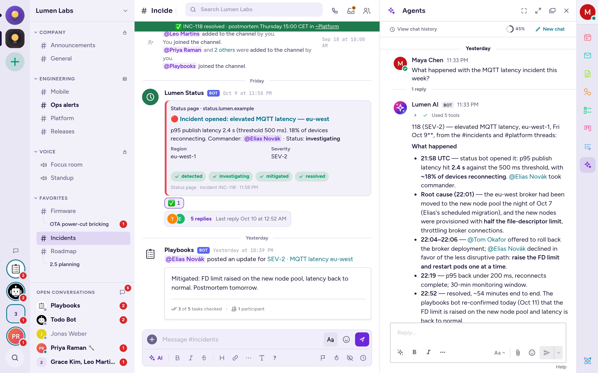
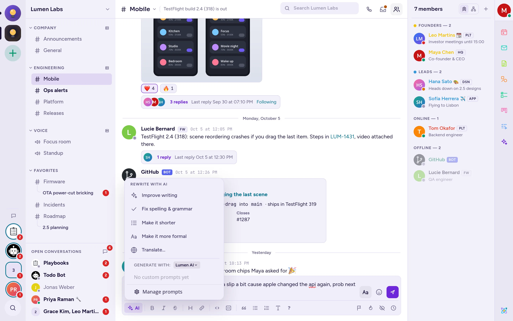

KI-Agenten
Wenn Ihr Administrator sie eingerichtet hat, können KI-Agenten Fragen beantworten, Gespräche zusammenfassen, Ihre Nachrichten umformulieren und Zusammenfassungen erstellen. Diese Seite erklärt, wie Sie sie nutzen und was sie sehen können.
Über Agenten
Ein Agent ist ein KI-Assistent, der in Antimatter als Bot mit eigenem Namen erscheint. Ihr Administrator verbindet Agenten mit einem KI-Dienst, der auf den eigenen Servern Ihrer Organisation oder bei einem externen Anbieter läuft, und legt fest, wer jeden Agenten verwenden darf und in welchen Kanälen. Wenn Ihr Server keine Agenten hat oder Ihnen keine zur Verfügung stehen, werden die Agentenfunktionen auf dieser Seite nicht angezeigt.
Einige Funktionen benötigen keinen Agenten: Das Umschreiben Ihrer Nachrichten und Rückblicke sind in Antimatter integriert. Sie funktionieren, sobald Ihr Administrator für jede dieser Funktionen einen KI-Dienst (eine Modellverbindung) ausgewählt hat.
Mit einem Agenten chatten
- Klicken Sie in der App-Leiste am rechten Rand des Fensters auf Agenten (das Glitzer-Symbol). Das Agenten-Panel öffnet sich.
- Wenn Ihr Server mehrere Agenten hat, wählen Sie einen über das Agenten-Menü im Kopf des Panels („Agenten auswählen“). Ihre Auswahl wird gespeichert und auch von den anderen KI-Funktionen verwendet.
- Geben Sie Ihre Frage in „Fragen Sie die Agenten alles…“ ein und drücken Sie Enter. Sie können auch eine Datei in das Panel ziehen, um sie dem Agenten zu übergeben.

Der Agent antwortet im Panel. Während er schreibt, können Sie auf Aufhören klicken; wenn er fertig ist, fragt Neu generieren nach einer weiteren Antwort. Wenn der Agent Tools verwendet oder das Web durchsucht hat, teilt er dies in seiner Antwort mit, zum Beispiel „3 Tools verwendet“ oder „Im Web gesucht nach …“.
Jede Frage, die Sie aus dem Panel stellen, beginnt ein Gespräch; antworten Sie darin, um fortzufahren. Klicken Sie auf Neuer Chat, um einen weiteren zu starten, und auf Chatverlauf anzeigen, um Ihre früheren Gespräche zu finden. Ein kleiner Ring zeigt, wie viel des Agenten-Gedächtnisses (seines Kontextfensters) das Gespräch belegt.
Das Panel ist eine Direktnachricht mit dem Agenten: Sie finden es auch unter Ihren Direktnachrichten und können dort dem Agenten schreiben. Jede neue Nachricht beginnt ein neues Gespräch, das in einem Thread beantwortet wird.
Nach dem Kanal fragen, den Sie gerade lesen
Wenn Sie das Agenten-Panel öffnen, während Sie einen Kanal lesen, bietet es an, „Über #kanal“ zu sprechen: Klicken Sie auf Ungelesene zusammenfassen, Letzte 7 Tage zusammenfassen oder Letzte 14 Tage zusammenfassen, oder geben Sie eine Frage in „Fragen zu …“ ein.
Eigene Prompts
Wenn Sie häufig dieselbe Frage stellen, speichern Sie sie als benutzerdefinierten Prompt über Prompts verwalten im KI-Menü des Nachrichtenfelds. Angeheftete Prompts erscheinen als Schaltflächen im Agents-Panel.
Einen Agent in einem Kanal befragen
Um einen Agent vor allen zu befragen, erwähnen Sie ihn wie eine Person: Geben Sie @ und den Namen des Agents ein, gefolgt von Ihrer Frage. Der Agent antwortet in einem Thread unter Ihrer Nachricht, den alle im Kanal lesen können. Er liest diesen Thread, nicht den gesamten Kanal.
Um mit dem Agent in einem Thread fortzufahren, erwähnen Sie ihn erneut in Ihrer Antwort. Wenn Sie es vergessen, erinnert Sie Antimatter nur Sie daran und bietet einen Link an, um den Agent einzubeziehen.
Ein Agent antwortet nicht, wenn Sie keine Berechtigung haben, ihn zu verwenden, oder wenn er in diesem Kanal nicht erlaubt ist. In einigen Kanälen gibt es einen Agent, der automatisch antwortet: Die Administratoren richten dies in den Einstellungen des Kanals ein.
KI-Aktionen für eine Nachricht
- Bewege den Zeiger über eine Nachricht und klicke auf Nachrichten-Aktionen (⋯).
- Bewege den Zeiger über Weitere Aktionen.
- Wähle unter KI-Aktionen eine der folgenden Optionen:
- Thread zusammenfassen: Eine Zusammenfassung des Threads, in dem sich die Nachricht befindet.
- Aktionspunkte finden: Die Aufgaben und wer sie erledigen soll.
- Offene Fragen finden: Die Fragen, die noch auf eine Antwort warten.
- Für mich reagieren: Der Agent wählt ein passendes Emoji aus und fügt es als Ihre Reaktion hinzu.
Die Antwort erscheint im Agenten-Panel in deinem privaten Gespräch mit dem Agenten: Niemand anderes sieht sie. Die gleichen Aktionen findest du im Menü Thread-Aktionen des Thread-Panels unter Weitere Aktionen.
Einen Kanal nachholen
Wenn Sie einen Kanal mit ungelesenen Nachrichten öffnen, hat die Zeile „Ungelesen“, die den Beginn markiert, eine Schaltfläche KI befragen. Klicken Sie darauf, wählen Sie den Agent unter „Erstellen mit:“ aus und wählen Sie dann Neue Nachrichten zusammenfassen, Aktionspunkte finden oder Offene Fragen finden. Die Antwort wird im Agents-Panel angezeigt und ist nur für Sie sichtbar.
Kanal-Zusammenfassungen umfassen höchstens 14 Tage.
Ihre Nachricht vor dem Senden umschreiben
Das Umschreiben ist verfügbar, sobald Ihr Administrator dafür einen KI-Dienst ausgewählt hat. Es verwendet keinen Agenten, daher muss kein Agent ausgewählt werden.
- Schreiben Sie Ihre Nachricht.
- Klicken Sie auf Formatierung anzeigen (Aa), wenn die Formatierungsleiste ausgeblendet ist, und klicken Sie dann auf KI am linken Ende.
- Wählen Sie unter Mit KI umschreiben die Option Schreibstil verbessern, Rechtschreibung & Grammatik korrigieren, Kürzer machen, Formeller machen oder Übersetzen…. Für eine Übersetzung geben Sie die Sprache ein, z. B. „Französisch“, und drücken Sie Enter.
Das Nachrichtenfeld zeigt „Die KI schreibt deine Nachricht um…“ und ersetzt dann deinen Text durch den neuen, der mit Von KI umgeschrieben markiert ist. Lies ihn, ändere ihn bei Bedarf und sende ihn. Klicke auf Rückgängig, um deinen eigenen Text wiederherzustellen. Bei einer Antwort in einem Thread liest die KI auch den Anfang des Threads und die letzten Antworten, damit das Umschreiben zum Gespräch passt.

Wenn Ihr Server Agenten hat, listet dasselbe Menü auch deine benutzerdefinierten Prompts unter „GENERATE WITH:“, wobei du den Agenten auswählst, der sie ausführt.
Zusammenfassungen
Ein Rückblick ist eine Zusammenfassung mehrerer Kanäle, die die KI für dich erstellt: einmalig oder nach Zeitplan, z. B. jeden Werktagmorgen. Rückblicke sind verfügbar, wenn Ihr Administrator dafür einen KI-Dienst ausgewählt hat. Du findest dann Rückblicke in der Liste deiner Direktnachrichten. Wenn der Dienst später entfernt wird, bleiben deine Rückblicke dort zum Lesen oder Löschen, aber du kannst keine neuen erstellen oder bestehende neu generieren, bis ein anderer Dienst ausgewählt wird.
Zusammenfassung erstellen
- Öffnen Sie Rückblicke und klicken Sie auf Hinzufügen eines Rückblicks.
- Geben Sie Ihrer Zusammenfassung einen Namen.
- Wählen Sie Rückblick für ausgewählte Kanäle oder Rückblick für alle meine ungelesenen Artikel.
- Aktivieren Sie Einmalig ausführen, um sofort eine Zusammenfassung zu erhalten, ohne Zeitplan.
- Wählen Sie bei ausgewählten Kanälen die Kanäle aus, die einbezogen werden sollen.
- Für einen einzelnen Rückblick überprüfe die Liste der Kanäle und klicke auf Start Rückblick. Für einen geplanten Rückblick wähle die Tage und die Uhrzeit, in der er ausgeführt wird, den Abzudeckenden Zeitraum (Letzte 24 Stunden, Letzte 7 Tage oder Seit letztem Lesen), füge bei Bedarf Zusätzliche Anweisungen für die KI hinzu und klicke auf Zeitplan erstellen.
Die Erstellung einer Zusammenfassung dauert einen Moment. Sie erscheint dann unter Ungelesen, mit einer Karte für jeden Kanal: deren Highlights und Aktionspunkte. Über das Menü einer Zusammenfassung können Sie einen Kanal öffnen, ihn als gelesen markieren, die Zusammenfassung neu generieren oder sie löschen. Ihre geplanten Zusammenfassungen finden Sie unter Geplant, wo Sie sie pausieren können. Ihr Administrator begrenzt, wie viele Zusammenfassungen Sie pro Tag ausführen können.
Meeting-Zusammenfassungen
Wenn ein Anruf transkribiert wurde (siehe Transkription und Live-Untertitel), kann die Transkript-Nachricht im Thread des Anrufs Meeting-Zusammenfassung erstellen anbieten. Der Agent schreibt die Zusammenfassung in Ihre private Unterhaltung mit ihm und kann anbieten, sie im Thread des Anrufs für alle zu veröffentlichen.
Suche mit einem Agenten
Wenn Ihr Administrator die KI-Suche aktiviert hat, bietet das Suchfeld im Gesprächskopf eine Agenten-Option in seinen Vorschlägen an. Wählen Sie diese aus und stellen Sie dann eine Frage in Ihren eigenen Worten: Der Agent sucht die Antwort in den Nachrichten der Kanäle, denen Sie beitreten, und antwortet im Agenten-Panel.
Werkzeuge und Websuche
Agenten können Tools verwenden, die Ihr Administrator anbindet, um beispielsweise in einem anderen System nachzuschlagen oder das Web zu durchsuchen. Das Menü Tools im Panel listet die Tool-Anbieter auf: Sie können jeden einzelnen für sich selbst aktivieren oder deaktivieren und bei solchen, die eine Anmeldung erfordern, auf Verbinden klicken.
Manche Tools verlangen Ihre Genehmigung, bevor sie ausgeführt werden: Der Agent zeigt eine Karte mit dem an, was er tun möchte, und Sie klicken auf Akzeptieren oder Ablehnen. In einem Kanal gibt es nach der Ausführung des Tools einen zweiten Schritt: Wählen Sie Teilen, damit der Agent das Ergebnis in seiner Antwort verwenden kann, die alle im Kanal sehen, oder Privat halten.
Agenten führen Tools mit Ihren Berechtigungen aus: Sie können nichts erreichen, auf das Sie selbst keinen Zugriff haben.
Was Agenten sehen
- Ein Agent liest nur das, was Sie selbst lesen könnten. Zusammenfassungen, Rückblicke und Suchen prüfen, ob Sie jeden Kanal lesen dürfen, und die KI-Suche umfasst nur Kanäle, denen Sie beitreten haben.
- Wenn Sie einen Agenten in einem Thread erwähnen, liest er diesen Thread. Eine Zusammenfassung liest den Thread oder den Kanal über den Zeitraum, den Sie gewählt haben. Eine Umformulierung liest Ihren Entwurf und in einem Thread zusätzlich den Beginn des Threads und die letzten Antworten.
- Mit jeder Anfrage erhält der Agent auch etwas Kontext: den Namen des Servers, wer fragt, sowie den Kanal und die Community.
- Was der Agent liest, wird an den KI-Dienst gesendet, den Ihr Administrator für ihn ausgewählt hat. Was eine eingebaute Funktion liest (Ihr Entwurf für eine Umformulierung, die Kanäle für eine Zusammenfassung), wird an den für diese Funktion gewählten Dienst gesendet. Dieser Dienst kann außerhalb Ihrer Organisation liegen. Fragen Sie Ihren Administrator, wenn Sie wissen möchten, wohin Ihre Daten gesendet werden.
- Ihre Unterhaltungen mit einem Agenten werden auf Ihrem Antimatter-Server gespeichert, wie andere Nachrichten auch.
- Antworten auf KI-Aktionen, Kanalzusammenfassungen und Suchen werden in Ihrer privaten Unterhaltung mit dem Agenten gepostet: Nur Sie sehen sie. Antworten auf Erwähnungen in einem Kanal sind für alle im Kanal sichtbar.
Wenn Sie die Agenten nicht sehen
If the Agents panel says "No agents yet", your administrator hasn't set one up that you can use. If your server lets people create their own agents, the panel offers Create an agent, using an AI service your administrator configured. Without a usable agent, the AI actions and Ask AI don't show. The AI button of the message box shows when rewriting is set up, or when you have agents for your custom prompts.